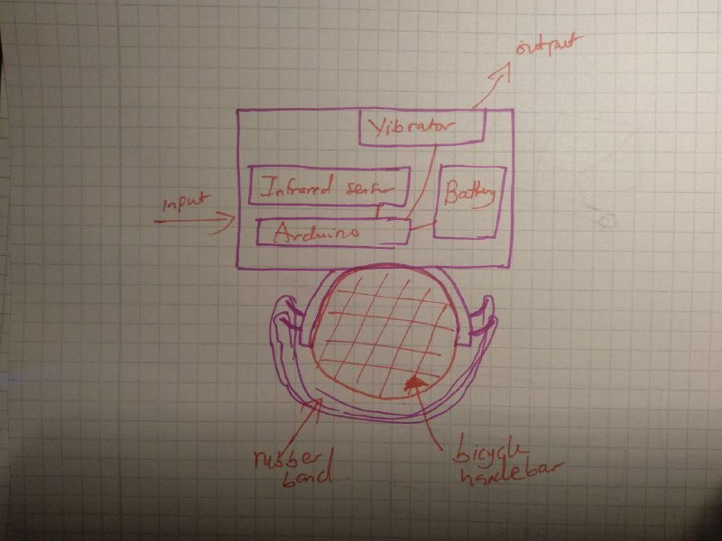
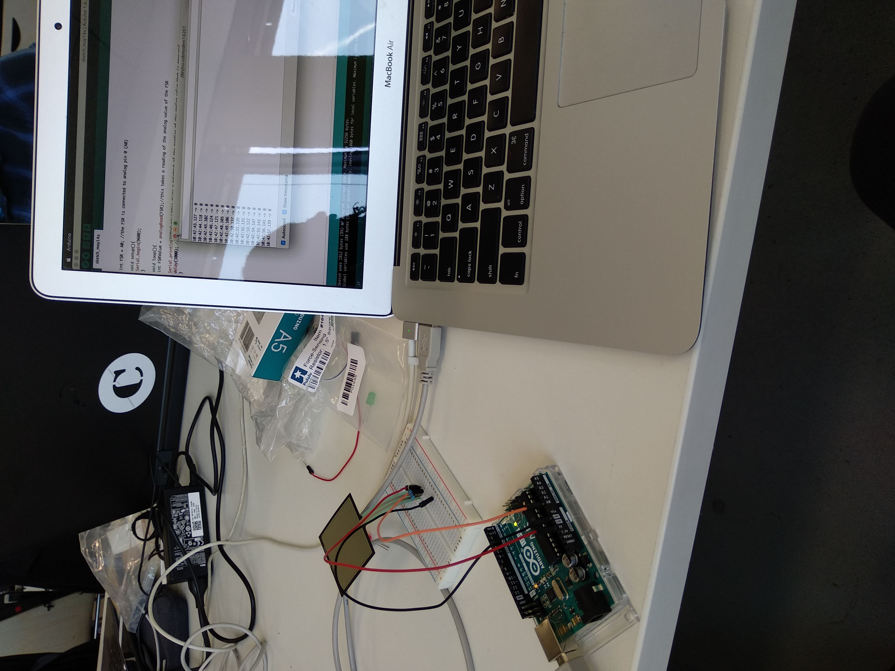
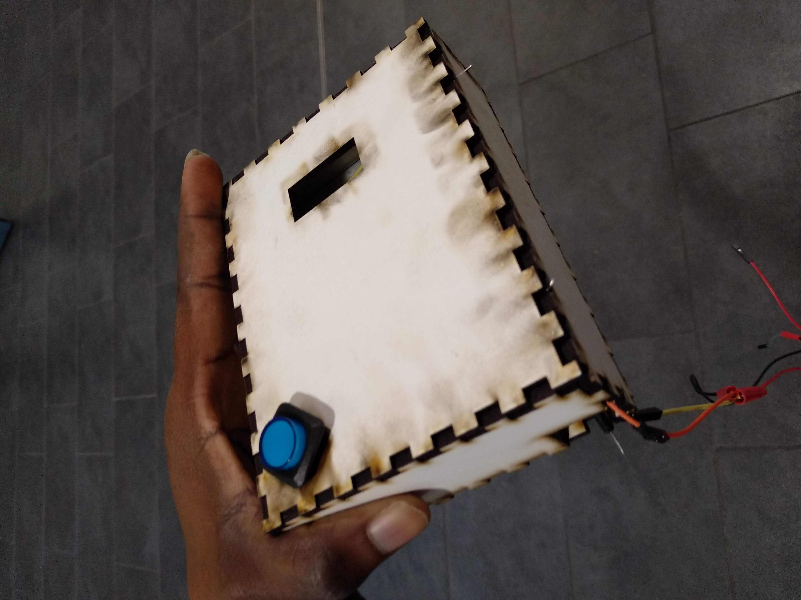
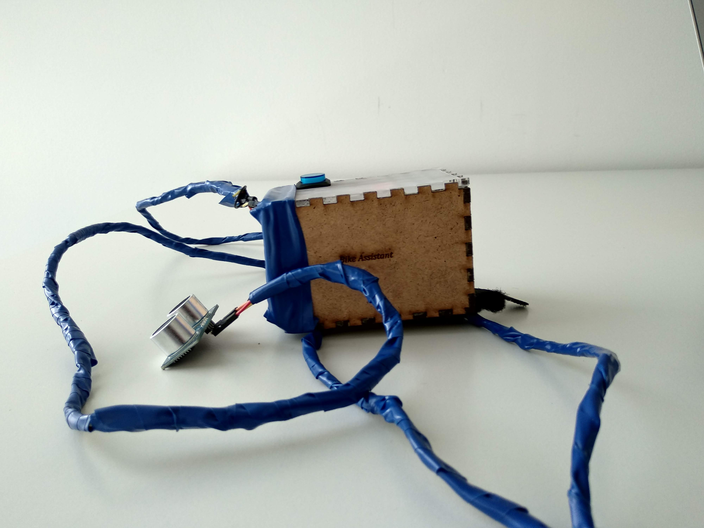
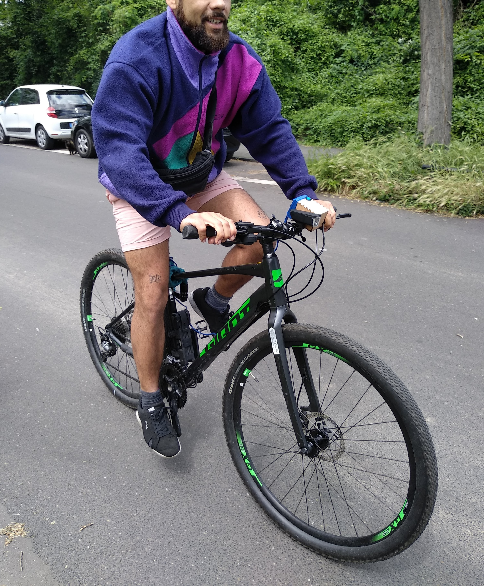

Bicycle Assistant - A device to alert cyclists of oncoming vehicles
As part requirement of my masters degree, I had to develop a physical device that solves a tangible problem in the society. At the time, I was just learning how to ride a bike and I was alarmed at the fact that bicycles didn't come with sensors that alerts you to other vehicles around - especially behind you.
Illustration by author
The challenge
The challenge of this project was to design and develop a prototype of a device that could alert cyclists to vehicles when they are close behind.
Role
Sole designer and developer.
Time Period
April 2019 - August 2019
Users and audience
The target audience for this project were young German cyclists who ride on bicycle lanes.
Constraints
The biggest constraints to this project was time and money. Money influenced the kind of technical components purchased for this prototype.
Process
To design this application, I went through a series of steps to get the job done:
1. Research After I had the insight to explore this problem, I conducted research in 3 layers:
a) Academic research - To see if this problem solves a tangible problem, which is one of my main objectives. Research showed that more than 26,000 people died yealy from bicycle accidents in Europe (European Road Safety Road Observatory, 2018). A key number that was caused by unawareness of oncoming vehicles.b) Market research - To discover how this problem was currently being solved and not to replicate an exististing solution, I conducted a market research. This research revealed different existing solutions in the market. A popular one which is the bike mirror. This solution however isn't popular among millennials since they perceive it as rather odd
c) User research - Interviews - To understand how my target users would feel about a solution that could potentially help with navigating bike lanes as a cyclist, I asked 5 users between age 22 - 35 about what they thought of 'bike mirrors' and if they currently used it. None of my participants had ever used it. When asked 'why', 2 of them objected to the idea, calling it 'old fashioned'. 3 just hadn't thought of it and would not consider using it in the future either. When asked if this bike mirror solved a tangible problem, they all agreed. But the problem - it just wasn't cool enough.
2. Insights from Interviews: After all my interviews - Academic, market and user research - I highlighted my key insights:
- Bicycles need a solution that alerted them to oncoming vehicles within 3 meters radius (according to research - this is the closest a vehicle should be before it becomes dangerous)
- The solution should be discreet, since millennials wouldn't want something obvious
3. Technical Research: With the insight I have, I did a research of how I could potentially solve this problem technically. What the technical constraints were and what hardware I could use given the money constraint.
4. Ideating: With the technical constraints in mind, I sketched potential ways of how the problem could be solved and how the solution could fit on a bike while still being discreet and simple
5. Prototype development - Electronics & Software
After ideation of what the prototype could possibly look like, I proceeded with writing the software using Aruduino and also assembling the hardware parts. The following components were used:
- Arduino IDE
- Ultrasonic sensor
- Breadboard
- Vibrating motor
- 5V battery
6. Lasercutting

To get a box that fit into my designed dimensions for the product, I used the lasercutting machine at my uni's fablab to cut a box.
7. First result and test
Failings
- To big and was no longer discreet
- Technical readings from the sensor wasn't accurate
- Signal feedback to user wasn't strong enough
8. Second iteration
Based on feedback collected after the first testing, I changed a few key things to solve the persisting problems:
- Reduce the size of the container.
- Introduce wiring that extended the placement of sensor to behind the bicycle to improve sensor readings
- Introduced LED light to help with feedback relay - red for danger and green for safe
- Made the lid translucent to make the LED feedback strong
- Introduced a latch using to fix device to the bicycle
9. Testing with users:
I tested with 5 of my target users, on open streets and designated bicycle lanes to find how using the product worked for them and also their perception of the product. The following is the summation of insights gained during testing:
- Participants loved the concept - the idea that they can listen to music while cycling with the aid of this device was especially thrilling for participants.
- Bicycles nowadays are designed with different kinds of handlebars. Placement of bike assistant is dependent on the type of handlebars the bicycle has.
- More and more bicycles now have special devices attached to their handlebars, to include a bike assistant, the solution has to be designed to be smaller (i.e more discreet to fit in an already congested handlebars)
Outcomes and Lessons
Although building the prototype of this solution was a success and resulted in a successful grade, continuous implementation has been suspended due to time and funding constraint. However this project gave me a huge insight into the scope of industrial design/ergonomics.
Were I to continue this project in the future, I would like to solve the following existing problems:
- Make the device even smaller that it becomes completely miniscule
- Use a stronger sensor that picks up 360 deg readings
- Use wifi or blootooth tech so as to do away with wiring